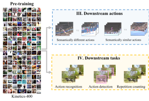

I am a Doctoral candidate at the University of Amsterdam, working with with Prof. Cees Snoek. I completed my masters in computer science at the University of bonn. My area of interest is Video Understanding, with my PhD thesis (which you can find here) focussing on Skill Determination. I am particularly interested in fine-grained and long term video understanding with weak, noisy or other forms of incomplete supervision.
Contact: f.m.thoker *at* uva.nl
News & Activities
Publications
|  |
How Severe is Benchmark-Sensitivity in Video Self-Supervised Learning? Fida Mohammad Thoker, Hazel Doughty, Piyush Bagad, Cees Snoek European Conference on Computer Vision (ECCV), 2022. [Webpage] [arXiv] [Code] |
 |
Skeleton-Contrastive 3D Action Representation Learning Fida Mohammad Thoker, Hazel Doughty, Cees Snoek ACM International Conference on Multimedia (ACMMM), 2021 [arXiv] [Code] |
Academic Service
Reviewer: BMVC 2020, CVIU 2021, Nuerips 2021, ICCV 2021, ECCV 2022, ACCV 2022